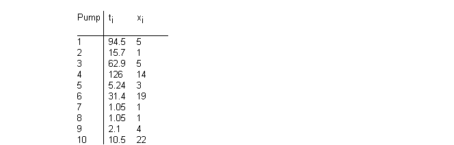
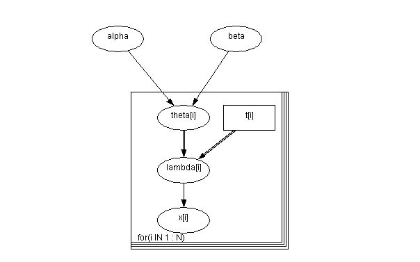
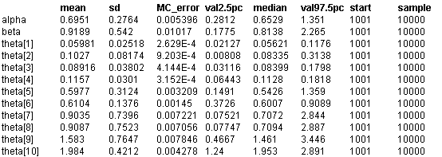

![[pumps0]](pumps0.bmp) Pumps: conjugate gamma-Poisson
Pumps: conjugate gamma-Poisson
hierarchical model
George
et al
(1993) discuss Bayesian analysis of hierarchical models where the conjugate prior is adopted at the first level, but for any given prior distribution of the hyperparameters, the joint posterior is not of closed form. The example they consider relates to 10 power plant pumps. The number of failures x
i
is assumed to follow a Poisson distribution
x
i
~ Poisson(
q
i
t
i
) i = 1,...,10
where
q
i
is the failure rate for pump
i
and t
i
is the length of operation time of the pump (in 1000s of hours). The data are shown below.

A conjugate gamma prior distribution is adopted for the failure rates:
q
i
~ Gamma(
a
,
b
), i = 1,...,10
George
et al
(1993) assume the following prior specification for the hyperparameters
a
and
b
a
~ Exponential(1.0)
b ~
Gamma(0.1, 1.0)
They show that this gives a posterior for
b
which is a gamma distribution, but leads to a non-standard posterior for
a
. Consequently, they use the Gibbs sampler to simulate the required posterior densities.
Graphical model for pump example:

BUGS
language for pump example:
model
{
for (i in 1 : N) {
theta[i] ~ dgamma(alpha, beta)
lambda[i] <- theta[i] * t[i]
x[i] ~ dpois(lambda[i])
}
alpha ~ dexp(1)
beta ~ dgamma(0.1, 1.0)
}
Data
( click to open )
Inits for chain 1
Inits for chain 2
( click to open )
Results
A burn in of 1000 updates followed by a futher 10000 updates gave the parameter estimates:
